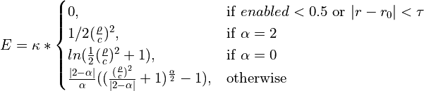
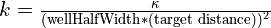
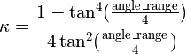

Adaptive Restraint Schemes¶
isolde restrain distances¶
Syntax: isolde restrain distances atoms [templateAtoms atoms] [protein true/false (true)] [nucleic true/false (true)] [customAtomNames list of names] [perChain true/false (true)] [distanceCutoff number (8.0)] [alignmentCutoff number (5.0)] [wellHalfWidth number (0.1)] [kappa number (10.0)] [tolerance number (0.025)] [fallOff number (2.0)] [useCoordinateAlignment true/false (true)] [adjustForConfidence true/false (false)] [groupName string (“Reference Distance Restraints”)]
Creates a “web” of adaptive distance restraints between nearby atoms, restraining them either to their current geometry or to that of a template. The atoms and templateAtoms arguments will be promoted to complete residues. If templateAtoms is not specified, the template is the model itself.
If no template is specified, then atoms may simply be any selection from your model. (NOTE: if the selection string includes commas, it will need to be quoted - e.g. isolde restrain distances “#1/A,B”). If a template is specified, then atoms and templateAtoms should be matched comma-separated lists of selections, where the residues within each selection come from a single chain, e.g. isolde restrain distances #1/A,#1,B,#1/C:1-50 templateAtoms #2/A,#2/B,#2/C. The individual chain selections need not have the same number of residues, but they should of course specify closely related sequences.
The algorithm ISOLDE uses to determine which atoms to restrain is as follows:
The set of atom names to use for restraints is constructed from the protein, nucleic and customAtomNames arguments. If protein is true, the following atom names are added to the list of candidates: - CA, CB, CG, CG1, OG, OG1
If nucleic is true, these atoms are added: - OP1, OP2, C4’, C2’, O2, O4, N4, N2, O6, N1, N6
You may, if you wish, further extend these defaults with a comma-separated list of other (non-hydrogen) atom names with the customAtomNames argument, but this should rarely be necessary.
If templateAtoms is provided and useCoordinateAlignment is True, steps 2-6 are performed. Otherwise, steps 4-6 are omitted. If perChain is true, only the intra chain distances will be restrained, with no restraints between chains.
A sequence alignment is performed for each pair of chains, yielding lists of corresponding residues.
All residue pairs found in the sequence alignment are merged into a single “super-alignment”
The largest rigid-body alignment of these residues’ “principal atoms” (CA for amino acids, C4’ for nucleotides) is found for which no principal atom is more than alignmentCutoff from its counterpart.
Within the aligned residues, matching lists are created consisting of atoms with allowed names present in both model and template. For each atom in the “template” list, all other atoms in the “template” list within distanceCutoff of the atom (excluding atoms from the same residue) are used to set the target distance for a restraint between the corresponding atoms in the “model” list.
Steps 4 and 5 are repeated on the residues left over from the previous round, until no further alignments of at least 3 residues are found.
The remaining arguments relate to the form of the restraint scheme, which requires some explanation. The functional form is as follows:

where
… leading to energy potentials that look like this:
If adjustForConfidence is True, the template is expected to be a predicted
model with an associated predicted aligned error (PAE) matrix. If the template
was fetched from the AlphaFold database (e.g. using the alphafold match
command) then the PAE matrix will be fetched automatically; otherwise you will
have to provide it - you can do so using ISOLDE’s “Reference Models” widget, the
ChimeraX “AlphaFold Error Plot” tool (Tools/Structure Prediction/AlphaFold
Error Plot), or the alphafold pae command. Values in the PAE matrix will be
used to adjust the parameters for each individual distance restraint. Pairs with
“perfect” confidence (PAE=0.2) will be assigned the restraint parameters
specified in the command arguments; lower-confidence restraints will be made
both weaker and “fuzzier”. Atom pairs with a mutual PAE greater than 4 Angstroms
will not be restrained. The adjustment scheme looks like this:

To interpret this, keep in mind that the force applied to a given atom is proportional to the derivative (that is, the slope) of the energy with respect to distance. In effect, for a pair of atoms that is close to the target distance the restraint will act as a simple harmonic spring (with a “flat-bottom” range defined by tolerance over which no force is applied). Once the interatomic distance deviates from the target by more than (wellHalfWidth + tolerance) * target_distance the energy profile begins to flatten out at a rate specified by .
The value of for a given restraint is determined by the combination of fallOff and the target distance, based on the idea that larger distances are inherently less certain. Specifically, . Small (or negative - not generally recommended) values of fallOff will cause the restraints to stay quite strong with increasing distances (like a ball rolling into a funnel), whereas large values cause them to quickly flatten off (like a golf ball rolling into its cup - only falling into place when very close to the target).
The parameter kappa sets the overall strength of the restraints. The effective spring constant for a given restraint within its “harmonic” range is  .
The groupName argument allows you to, if you wish, create multiple independent groups of adaptive distance restraints by specifying a unique name for each group.
isolde restrain single distance¶
Syntax: isolde restrain single distance atoms minDist maxDist [strength number (20)] [wellHalfWidth number ((minDist*+*maxDist)/10)] [confidence number (-2)] [groupName string (“Reference Distance Restraints”)]
Restrain the distance between a single pair of atoms. The arguments minDist and maxDist specify the range of distances between which no force will be applied. In other words, the target distance becomes (minDist*+*maxDist)/2, and the tolerance becomes (maxDist-minDist)/2.
strength: Corresponds directly to
 in the energy formula.
in the energy formula.wellHalfWidth: Corresponds directly to c (the half-width of the harmonic region) in the energy formula. If not specifies, it defaults to 1/5 of the target distance.
confidence: Corresponds to in the energy formula.
groupName: Restraint group to add this restraint to.
isolde release distances¶
Syntax: isolde release distances atoms [to atoms] [internalOnly true/false (false)] [externalOnly true/false (false)] [longerThan number] [strainedOnly true/false (false)] [stretchLimit number (1.2)] [compressionLimit number (0.8)] [groupName string (“Reference Distance Restraints”)]
Release a selection of adaptive distance restraints. (NOTE: released restraints cannot currently be reinstated, but may be re-created using the “isolde restrain distances” command)
Calling isolde restrain distances <selection> with no other arguments will simply release all restraints involving any of the specified atoms (including restraints to atoms outside the selection). The remaining arguments allow fine- tuning of the selection to release:
to (incompatible with internalOnly and externalOnly): if provided, only those restraints between the to selection and the main selection will be released.
internalOnly (incompatible with externalOnly): if true, only those restraints for which both atoms are within the selection will be released.
externalOnly (incompatible with internalOnly): if true, only those restraints connecting atoms within the selection to those outside will be released.
longerThan: a value in Angstroms. If specified, only restraints with target distances larger than this value will be released.
strainedOnly: if true, only restraints with (length/target) larger than stretchLimit or smaller than compressionLimit will be released.
stretchLimit (ignored unless strainedOnly is true): ratio of current distance to target distance above which restraints will be released.
compressionLimit (ignored unless strainedOnly is true): ratio of current distance to target distance below which restraints will be released.
groupName: restraint group to which the command will be applied.
isolde adjust distances¶
Syntax: isolde adjust distances atoms [internalOnly true/false (false)] [externalOnly true/false (false)] [kappa number] [wellHalfWidth number] [tolerance number] [fallOff number] [displayThreshold number] [groupName string (“Reference Distance Restraints”)]
Adjust the strength and/or display properties of a set of adaptive distance restraints.
internalOnly (incompatible with externalOnly): if true, only those restraints for which both atoms are within the selection will be released.
externalOnly (incompatible with internalOnly): if true, only those restraints connecting atoms within the selection to those outside will be released.
kappa: see isolde restrain distances
wellHalfWidth: see isolde restrain distances
tolerance: see isolde restrain distances
fallOff: see isolde restrain distances
displayThreshold: deviation from target distance (expressed as a fraction of the target distance) below which a given restraint will not be shown. For example, to only show restraints deviating more than 10% from their targets, set displayThreshold to 0.1. To show all restraints, set displayThreshold to 0.
groupName: restraint group to which the command will be applied.
isolde restrain torsions¶
Syntax: isolde restrain torsions residues [templateResidues residues] [backbone true/false (true)] [sidechains true/false (true)] [angleRange number (60.0)] [alpha number (0.2)] [springConstant number (250.0)] [identicalSidechainsOnly true/false (true)] [adjustForConfidence true/false (true)]
Analogous to isolde restrain distances, this command restrains dihedral angles (currently protein only) to match either their current values or those of a template, using an adaptive energy function that “gives up” once the deviation becomes too large. The energy function has a similar functional form to the von Mises distribution, but is normalised such that the maximum applied force is independent of the range of angles over which a restraining force is applied.
The mathematical form of the energy function is:
… which looks like this:
Adaptive energy function. (a) angleRange=60 (equivalent to kappa=3.46). (b) angleRange=120 (equivalent to kappa=0.67)¶
templateResidues: if supplied, the template will first be sequence-aligned to the model, and matching residues will be used to set the target angles. Otherwise, the model will simply be restrained to its current conformation.
backbone: if true, backbone phi and psi angles will be restrained using adaptive restraints. The omega dihedrals will also be restrained to the target using standard non-adaptive dihedral restraints.
sidechains: if true, sidechain chi angles will also be restrained.
angleRange: the size of the angle difference allowed before the applied force drops away. In practice, this is defined as twice the angle at which the applied force reaches a maximum, and is related to kappa by:

Values of kappa less than 0.001 are automatically set to zero to avoid numerical instability.
springConstant: effective strength of each restraint when close to the target angle, in

identicalSidechainsOnly: only applicable if templateResidues is supplied and sidechains is true. If true, only sidechains of residues with the same identity in model and template will be restrained.
adjustForConfidence: (only use if the template is an AlphaFold model or similar with pLDDT values in the B-factor column) Uses the per-residue confidence values to adjust the angleRange, springConstant and alpha values for each restraint. If angleRange and alpha are left blank, their default values are adjusted to 150 and 0.5 respectively; otherwise the user-supplied values become the limiting values applied to residues with pLDDT=100. With default arguments the resulting restraint profile distribution looks like the following. Residues where the template pLDDT is less than 50 will not be restrained.

isolde adjust torsions¶
Syntax: isolde adjust torsions residues [backbone true/false (true)] [sidechains true/false (true)] [angleRange number] [springConstant number]
Adjust the strength or range of restraints previously created by isolde restrain torsions for the selected residues.
backbone: adjust the restraints on backbone torsions?
sidechains: adjust the restraints on sidechain torsions?
angleRange: set the range over which the restraints apply to a new value.
springConstant: set the strength of the restraints to a new value.
isolde release torsions¶
Syntax: isolde release torsions residues [backbone true/false (true)] [sidechains true/false (true)]
Release restraints previously created by isolde restrain torsions for the selected residues.
backbone: release backbone restraints?
sidechains: release sidechain restraints?